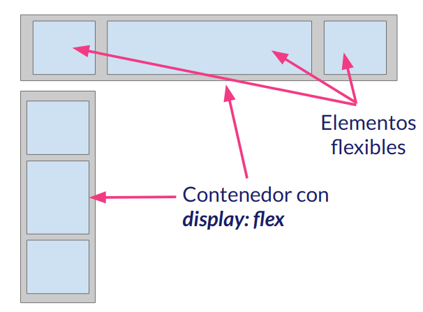

1.1.-Maquetando con contenedores Flex: Elementos de maquetación con CSS Flex
El concepto de maquetación con FLEX es el siguiente: Mediante una etiqueta o contenedor y modificando sus propiedades
CSS, voy a controlar el comportamiento de los elementos que están dentro de él/ella.
Elementos principales cuando maquetamos con FLEX
- Por un lado el propio contenedor FLEX: agregando con css el valor del atributo "display:flex"
- Dentro de este contenedor, los elementos flexibles que están dentro (son hijos) y cuyas propiedades modificaremos
Visualmente se ve algo así:

Donde lo gris son los contenedores flex padre y lo azul los elementos hijos los cuales modificamos sus propiedades
¿Que voy a poder controlar desde el padre? (Propiedades modificables de los elementos flexibles)
- La altura
- La anchura
- El orden
- La alineación vertical
- La alineación horizontal
- La distribución a lo largo del contenedor
Con estas propiedades vamos a maquetar de una manera más fácil a como lo hacíamos de la manera tradicional